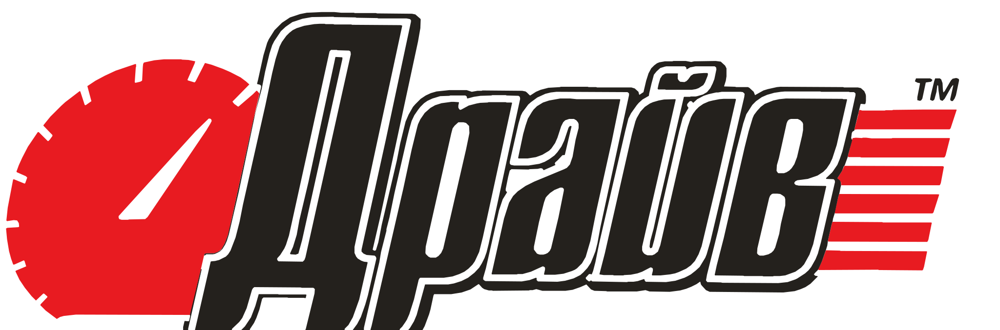
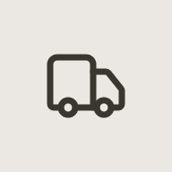
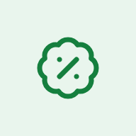
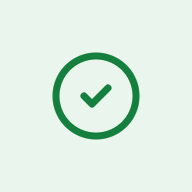
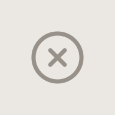

Сповіщення
Подія створює рядок у центрі сповіщень людини, тост на кожній її відкритій сторінці і системне сповіщення, коли жодна сторінка сайту не у фокусі. Усі три кажуть лише подію й номер — без імені, телефону, суми й тексту повідомлення.
Дзвіночок
Лічильник — непрочитані рядки людини, той самий на всіх її пристроях. Нуль не показуємо, понад 99 пишемо «99+». Лічильник чорний: червоний у шапці сайту вже означає кошик.

Центр сповіщень
Один список на всіх пристроях, прочитане зберігає сервер. На комп'ютері й планшеті — поповер під дзвіночком шириною 400 px, на телефоні — на весь екран. По 20 рядків.
- —Рядок: плитка з тоном події, подія й номер, час, позначка «не прочитано». Непрочитаний — жирним і з чорною крапкою праворуч.
- —Час словами, поки близько: «щойно», «5 хв тому», «3 год тому», «вчора», далі — дата, «30 вер». Повна дата й час — у підказці на наведенні.
- —Натискання на рядок відкриває обʼєкт і позначає рядок прочитаним — на всіх пристроях. Наведення — сірий фон і червона риска зліва, як у кожному списку сайту.
- —«Позначити всі прочитаними» видно, лише коли є непрочитані. «Показати ще» додає наступні 20; коли більше немає — кнопки немає.
- —Закривається кліком поза ним і клавішею Escape (фокус повертається на дзвіночок), на телефоні — хрестиком. Поки центр відкритий, нові події зʼявляються вгорі списку без тосту.
Тост
Приходить у кожну відкриту сторінку людини — і у фонову вкладку теж, де чекає, доки людина повернеться. Будова та сама, що в рядка центру, тому впізнається з першого разу.
- —Де. Знизу ліворуч від робочого поля; на телефоні — знизу на всю ширину, під великим пальцем. Праворуч і вгорі в панелі та на сайті стоять головні дії: кнопки заголовка, липкий підсумок замовлення й кошика, «В кошик» у рядках. Над панеллю збереження тост піднімається сам.
- —Скільки. Новий стає найближче до краю екрана. На комп'ютері видно три, на телефоні — один; решта збирається в «Ще N сповіщень», яке відкриває центр.
- —Коли йде. Через 8 с показу. Час іде, лише поки сторінку видно; курсор або фокус на тостах зупиняють відлік. Зникає одразу, коли рядок прочитали деінде (інша вкладка, телефон) і коли людина відкрила центр — там усе вже є.
- —Натискання відкриває обʼєкт і позначає рядок прочитаним. Хрестик ховає тост на цій сторінці, а рядок у центрі лишається непрочитаним.
Сповіщення в браузері
Тихий рядок унизу центру сповіщень. Під час завантаження сторінки нічого не спливає: браузер показує свій запит лише після натискання. Стан щоразу читаємо з браузера, тож запамʼятовувати «не питати знову» нема чого.
Пропозиція на кроці «Ви увійшли»
Той самий запит, що й кнопка вище, — один раз, одразу після входу покупця, кодом чи паролем. Пропозиція стоїть під кнопками переходу, тож вибір, куди йти далі, в жодному стані не зсувається.
- —Коли. Лише коли браузер ще може спитати: на цьому пристрої не питали, і сповіщення він підтримує. Стан читаємо раз — коли зʼявився крок «Ви увійшли».
- —Коли ні. Дозвіл уже дано чи заблоковано, браузер не вміє, iPhone чи iPad у Safari без екрана «Додому» — крок такий, як сьогодні, без пропозиції й пояснень. Вхід у панель — теж без неї: у працівника лишається кнопка в центрі.
- —Запит браузера відкриває тільки «Увімкнути». Ні завантаження сторінки, ні поява кроку його не викликають.
- —«Не зараз» лише ховає пропозицію: запит браузера не витрачено, кнопка в центрі сповіщень на місці. Нічого не запамʼятовуємо — наступного входу пропозиція може зʼявитися знову.
- —Фокус. Після «Не зараз», дозволу й відмови переходить на першу кнопку переходу. Прийшли з оформлення — це «До оформлення», пропозиція так само під кнопками.
Системне сповіщення
Зʼявляється, лише коли жодна сторінка сайту не у фокусі — інакше людина вже бачить тост. Вигляд малює система; ми даємо заголовок, іконку й монохромний значок для рядка стану Android.
Значок — «Д» зі слова «Драйв», той самий, що у фавіконі. Спідометр і лінії швидкості з повного знака на 24 dp зливаються в пляму, а «Д» читається.
Праворуч — що сталося, а не «Д»
Ліву іконку малює телефон — це іконка встановленого застосунку. Праву даємо ми, тож вона показує вид події: та сама плитка, що в центрі сповіщень, лише 192 × 192. Заголовок і текст — за рішенням власника від 07.10.2026.

Кольори й лінія — з плитки центру: фон і колір тону, Lucide, лінія 1,75. На 40 dp гліф виходить близько 20 dp — як у плитці 32 px.
Набір — 16 видів, 15 картинок
Кожна — на світлій і темній картці сповіщенняФайли — assets/push/{icon}.png, поряд SVG-джерело. Картинка несе власну плитку, тож контраст не залежить від теми телефона. Єдиний виняток — чорна плитка order_new на темній картці: край плитки зникає, але білий гліф читається.
Android — група з чотирьох


Chrome на Windows
Примітки
- —Пропозиція, не застосована: order_cancelled. Тон muted — сірий гліф ink-400 на ink-100, контраст 2,6 : 1, нижче за 3 : 1 для графіки. У плитці 32 px поряд із текстом рядка це терпимо; у сповіщенні картинка стоїть сама, і хрестик блякне. Пропоную гліф ink-500 — 4,3 : 1, і досі найтихіша картинка в наборі. Якщо приймаєте — так само змінити й плитку в центрі, щоб вони лишились одним обʼєктом.

Зараз, ink-400 Пропозиція, ink-500 - —Інші іконки з таблиці на 40 dp читаються, їх не змінено. wallet і banknote — обидва прямокутники в тоні warn, але гаманець має застібку, а купюра — коло, і поряд у групі їх не сплутати.
- —Різних картинок 15, а не 14: повторюється лише message-square (customer_message і order_message, обидва plain).
- —iPhone розглянуто й не малювали: веб-сповіщення Safari показують іконку застосунку з екрана «Додому» і можуть ігнорувати нашу. Поле icon однаково передаємо — якщо iOS його покаже, це буде та сама картинка.
Вимкнення
Один перемикач людини вимикає системні сповіщення на всіх її пристроях. Центр і тости на відкритих сторінках лишаються — вони частина сайту. Підписки пристроїв не видаляються: увімкнули знову — сповіщення йдуть туди ж, без повторного дозволу.
Сповіщення
Пишемо про стан замовлень і бонуси.
Події
Чотири для панелі — їх отримує кожен працівник, і дванадцять для покупця — по одній на кожен лист, який він уже отримує поштою. Тон плитки читається зі списку на двадцять рядків: жовтий — потрібна дія, зелений — готово, сірий — скасовано, чорний — нове замовлення.
- —Що змінено в чернетці: «:» замінено на тире, як у решті копірайту сайту; «очікує оплати» — «чекає на оплату»; «чекає у магазині» — «чекає на вас у магазині»; «Нова заявка» — «Нова заявка на підбір», бо в панелі заявки — це підбір за VIN і «нічого не знайдено».
- —Звернення про повернення відкриває список повернень: окремої картки звернення в панелі немає.
Наживо
Подія з пульта приходить у кожну відкриту вкладку — у панель і кабінет нижче теж. Відкрийте дві вкладки: прочитане в одній зникає з іншої.